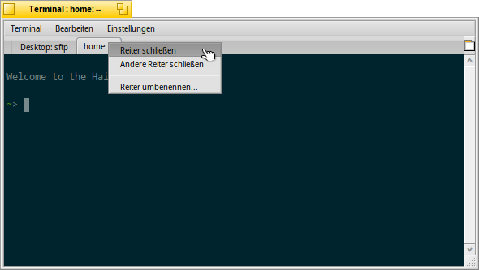
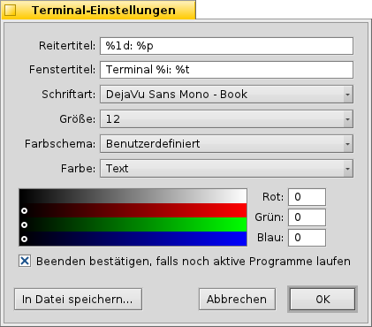

Deutsch
Deutsch Français
Français Italiano
Italiano Русский
Русский Español
Español Svenska
Svenska 日本語
日本語 Українська
Українська 中文 ［中文］
中文 ［中文］ Português
Português Suomi
Suomi Slovenčina
Slovenčina English
English Terminal
Terminal
| Deskbar: | ||
| Ort: | /boot/System/apps/Terminal | |
| Einstellungen: | ~/Konfiguration/settings/Terminal ~/.profile - ergänzen/ändern von Standardwerten, die in /boot/Allgemein/etc/profile definiert sind ~/.inputrc - ergänzen/ändern von Standardwerten, die in /boot/Allgemein/etc/inputrc definiert sind |
Das Terminal ist Haikus Schnittstelle zur Bash, der "Bourne Again Shell".
Einige Anleitungen zum Arbeiten in der Konsole finden sich in Bash und Skripten. Außerdem werden im Kapitel Haikus Konsolenprogramme einige Haiku-spezifischen Befehle vorgestellt. Hier geht es um die Anwendung Terminal an sich.
 Fenster und Reiter
Fenster und Reiter
Es können beliebig viele Terminals geöffnet werden. Entweder jedes in seinem eigenen Fenster - durch einfaches Starten, oder mit ALT N von einem bereits laufenden Terminal aus - oder man benutzt die Reiterfunktion vom Terminal und öffnet einen neuen Reiter mit ALT T.
Ein Doppelklick in den noch freien Teil der Reiterleiste öffnet einen neuen Reiter; ein Doppelklick auf einen Reiter öffnet einen Dialog zum umbenennen seines Titels. Es existieren diverse mit einem %-Zeichen beginnende Variablen, die mittels eines Tooltips erklärt werden wenn der Mauszeiger über dem Textfeld steht.
Als Standard, %1d: %p, zeigt ein Reiter den aktuellen Ordner und per : davon getrennt, den Namen des gerade laufenden Prozesses (oder -- wenn nur die Bash selbst läuft, wahrscheinlich im Leerlauf wartend). Der obige Screenshot zeigt den ersten Reiter mit einer FTP-Sitzung im Desktop Ordner und einen zweiten Reiter im Leerlauf im home Ordner.
Mittels kann der Fenstertitel des Terminals auf ähnliche Weise definiert werden.
Ein Rechtsklick auf einen Reiter öffnet ein Kontextmenü, um oder oder wie durch Doppelklick zu können.
Ein Terminal-Fenster kann wie jedes andere Programmfenster in seiner Größe verändert werden. Es sind auch vorgegebene Einstellungen unter vorhanden. Mittels ALT RETURN kann in den Vollbildmodus (und zurück) geschaltet werden.
Geänderte Fenstergröße und Text-Kodierung werden nur behalten, wenn sie mit dem Menüpunkt als Voreinstellung gespeichert werden.
Einstellungen
öffnet ein Fenster, um die Standardeinstellungen eines Terminals zu konfigurieren.
Zuerst kommen die "Formeln" zur Benennung von Reiter- und Fenstertiteln. Wieder werden die verschiedenen Variablen durch einen Tooltip gezeigt. Darunter stellt man die Schriftart und -größe und verschiedene Text- und Hintergrundfarben ein. Entweder verwendet man vordefinierte Farbschema wie oder oder erstellt ein Schema , indem man die Farbregler darunter benutzt.
Wird die Option aktiviert, erscheint eine Warnung wenn man ein Terminal-Fenster schließen möchte, in dem gerade noch ein Programm ausgeführt wird.
Unterschiedliche Einstellungen lassen sich in getrennten Profilen speichern, die bei einem Doppelklick ein entsprechend konfiguriertes Terminal starten.
speichert die aktuellen Einstellungen als Standardwerte.
Tastaturkürzel
Eine Liste mit Tastaturkürzeln ist unter Abkürzungen und Tastenkombinationen aufgelistet.
Personalisierung der Bash
Da die Bash aus der Unix-Welt stammt, gibt es unzählige Möglichkeiten sie anzupassen. Zwei davon sind für den Anwender besonders interessant: .profile und .inputrc
Werden diese beiden Dateien im Benutzer/ Verzeichnis angelegt, erweiteren oder ersetzen die Standardwerte, die in /boot/Allgemein/etc/ festgelegt sind,
.profile
Die Datei .profile wird jedes Mal geladen, wenn ein neues Terminal gestartet wird. Durch sie werden die verschiedensten Variablen und Verhalten innerhalb der Bash definiert. Im Internet findet man eine Unmenge an Dokumentation, die alle Möglichkeiten im Detail zeigt.
Der Haiku/BeOS Tipp-Server enthält einige Beispiele und Tipps, unter anderem:
- Customize your Terminal prompt (Den Prompt im Terminal an persönliche Vorlieben anpassen)
- More prompt customizations (Noch mehr Möglichkeiten, den Prompt anzupassen)
- Enhancing bash (Die Bash erweitern)
- Custom keyboard shortcuts (Personalisierte Tastaturkürzel)
Noch mehr Tipps gibt es hier.
.inputrc
Die Datei .inputrc kümmert sich um die Tastaturzuweisungen. Da Haiku aber bereits mit einer sinnvollen Voreinstellung eingerichtet ist, wird man hier wenig ändern müssen - außer man hat spezielle Bedürfnisse. In diesem Fall sei auf die GNU Readline Bibliothek im Internet verwiesen.
Tipps für das Arbeiten mit dem Terminal
Wird eine Datei aus einem Tracker-Fenster ins Terminal gezogen, so wird der Pfad zu dieser Datei an der aktuellen Cursor-Position eingefügt. Wird sie mittels der rechten Maustaste hineingezogen, gibt es mehrere Möglichkeiten zur Auswahl:
Fügt den Pfad zu dieser Datei ein. Wechselt im Terminal zum Verzeichnis der Datei. Im aktuellen Verzeichnis des Terminals wird eine Verknüpfung zu dieser Datei erstellt. Verschiebt die Datei in das aktuelle Verzeichnis im Terminal. Kopiert die Datei in das aktuelle Verzeichnis im Terminal. Vom Terminal aus kann auch jede Datei mit ihrem bevorzugten Programm gestartet werden. Der Befehl hierfür ist open [Dateiname]. Dies funktioniert auch mit den Repräsentanten für das aktuelle (".") und übergeordnete ("..") Verzeichnis. Um also ein Tracker-Fenster mit dem aktuellen Verzeichnis zu öffnen wäre dies einzugeben:
open .